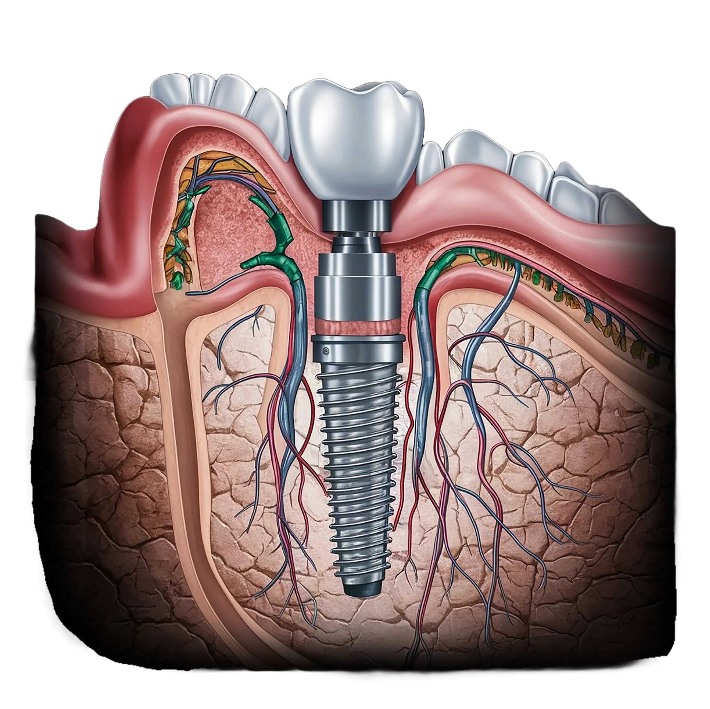

Our Mission
At Edhak Dental Center our goals can be summarized in simply providing you with maximum comfort and relaxation in a neatly selected natural brightly beautiful garden view, surrounded with our utmost care. In our Center, we combine cutting-edge technologies with sophisticated restorative techniques, such as implant dentistry, digital smile design imaging, over-night smile makeovers and Ceramic veneers, along with traditional Dentistry methods to provide you with the optimum oral health you deserve. Based on our deep knowledge and deeper experience in the field, we know that this combination will improve your overall health and well-being for life.
We take pride in providing you with a comfortable treatment experience, under the supervision of and perfect care from our qualified, friendly, and knowledgeable staff. We invite you to our center, located conveniently in the quiet district in Maadi, Cairo. You may call us at any time to ask about whatever issues you have. A special Contact Us page is available if you prefer to email us with an appointment request. We will do everything possible to make sure you have a pleasant visit and a wonderful experience.


01
Veneers
Improve the aesthetic look of your teeth, and keep them away from having a damaged surface. You will be able to color and reshape your teeth whether they are too big or too small, crooked, shipped, with odd appearance, or contain small holes. A lot of things contribute to teeth discoloration. That cig you puffed while reading the paper, cup of coffee you drank while checking out life insurance quotes online, and other stuff you put in your mouth add up and bring damage to your teeth. Your teeth discoloration is largely due to chemical damage, medications, drinking coffee, tea, or cigarettes or may be even congenital or by age. People who drink significant amounts of cola soft drinks may experience similar staining.
Genetics can also play a significant role in teeth discoloration.
Owing to the global success of the ZOOM one-hour whitening systems, Maadi Dental Center has equipped its team with the most advanced bleaching machine; ZOOM AP (Advanced Power), to safely keep your bright and healthy smile eternal. The operation will last for only one hour. The most important issue about teeth whitening is the selection of the modality that ensures no damaging effect whatsoever on the structure or strength of teeth. With this technique employed at MDC, the only trouble one may get from teeth bleaching is a temporary sensitivity (in some individuals) to hot and cold drinks that will disappear by itself in a few days.
02
Periodontal Therapy
Now you will be able to avoid gums bleeding, Abscess formation, Foul odor, and loosening of teeth. These symptoms always accompany periodontal diseases. Periodontal diseases always occur due to bacterial infections, which lead to the distortion of attachment fibers and supporting bone that hold your teeth in the mouth. Periodontal diseases range from simple gum inflammation, called gingivitis, to serious diseases that result in further damage to the bone. Now you can put an end to all gums-related pains and regain your healthy smile, using the most advanced surgical and/or laser treatments aided by a properly designed home care programs.
Root Canal Treatment
Suffer no more while chewing. Put an end to the swelling of your gum, and keep your teeth in good health by treating your root canal in a single visit. Root canal treatment (sometimes called endodontic therapy); it is the process of removing the dead or injured pulp from teeth and filling its space. Root canal treatment helps you preventing jaw problems and gum diseases.
Factors leading to root canal treatment:
( Change in teeth color - Tooth Decay - Gum diseases - When germs or bacteria infect your pulp - Deep cavities ) Our team of experts will let you enjoy a healthy and shiny smile, as we will remove the blood vessels and nerves from your injured and/or damaged teeth, giving you the most advanced root canal treatment that will make you kiss your pains goodbye.


03
Implants
ImplantsYou will experience greater stability to be more able to eat, speak... and smile! Through our dental implants treatment, we will help you to replace missing teeth, provide you with a longer-term solution, slow down bone loss and preserve relevant healthy tooth tissue. Even if you are missing several teeth on the same side of your mouth, you can still enjoy the benefits from our dental implants.
This is done simply in two phases:
1. Implant Surgical Insertion Phase: The process of placing the implants into the mouth jaw bone.
2. Prosthetic restoration Phase: Building the crowns or bridges over the dental implants. You can have any number of your teeth replaced with implants from one single tooth to a complete set,and keep your healthy ones intact.
Proper clinical and radiographic evaluation is mandatory prior to implant treatment planning. Sometimes bone augmentation, bone expansion or maxillary sinus membrane lifting is necessary for a successful plan. Our team is quite familiar with these procedures and can explain them to you easily, then give you the right advice whenever needed.
04
Pediatric Dentistry
At Maadi Dental Center, we provide our little patients with a ‘’children- friendly atmosphere’’ to maintain a bright and healthy smile on their lips. We provide your children with complete dental care, as we believe that oral health affects the child’s overall health. Our team possesses excellent knowledge and experience that enable them to gain child’s trust and dental acceptability. We try to make our little patients stress-free, as they will be able to listen to their favorite music or watch attractive cartoons while providing them with the highest level of treatment. In addition, we perform regular teeth checks for your child to guarantee excellent oral health. Early enhancement and promotion of oral hygiene habits is a goal that we never miss.
Restorative Dentistry
You can restore your missing, decayed or damaged teeth, with our top-class restorative dentistry. Restorative dentistry includes the crowns, the bridges, and dentures.


05
Orthodontics
Braces have come a long way since we started in 1984. Prof. Dr. Kaboudan is now introducing
two revolutionary orthodontic systems:
The Damon System which is a self-ligating brackets, requiring less treatment time and no extractions. The ICE brackets which are clear braces providing better aesthetics,
if you prefer not to have braces at all.
We can align your teeth using INVISALIGN, a set of successive clear trays worn over a short period of time, moving your teeth gently and silently towards the desired position, without anyone realizing them.
06
Prosthodontics
Are mainly used to restore the original functions that your damaged or decayed teeth used to perform. Crowns act as a protective cover to your teeth. Due to the advanced technological tools we use in the Center, you don’t have to pay multiple visits to get your dental crowns. Don’t worry, we use CEREC 3D which will minimize your visits to only one single visit.
Dental Bridges
Are used to replace your missing teeth by new ones. They also close the gaps between two crowns and fill in the area resulting from a missing tooth.
Dentures
Are alternative teeth that help you easily replacing one (or more) tooth (teeth). You can remove them whenever you want. This kind of restorative dentistry is mainly used for those who lost their entire upper and/or lower natural teeth.